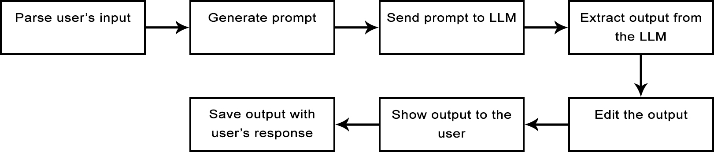

vyjmenování jednotlivých úloh:
poznámka: dále by bylo možné i navrhovat generalizace (možná to v rámci diplomky přidám)
TODO: podrobněji popsat všechny jednotlivé úlohy a nejspíš uvést konkrétní příklady
ke každému návrhu snaha ukázat kontext kolem něj, aby se uživatel mohl rychle rozhodnout, jestli chce příslušný návrh použít, nebo ne
varianty:
TODO: popsat, co umožníme uživateli nastavovat za parametry
jakým způsobem automaticky hledám vygenerované původní texty v popisu domény
zmínit, jak funguje sjednocování původních textů, když uživatel chce v popisu domény zvýraznit původní texty pro více prvků
na jaké hlavní problémy jsem narazil a proč některé zvýrazněné prvky v popisu domény ve skutečnosti nemusí být namodelovány a naopak
například dejme tomu, že v popisu domény je uvedena tato věta: "Student je osobou, která..."
příklad problému u atributů: "Totožnost osoby se prokazuje buď občankou, nebo řidičákem."
jako future work by se dal zkusit obrácený přístup:
TODO: vyjmenovat a popsat, s jakými popisy domén pracujeme
TODO: hodilo by se sem dát tabulku s počtem entit, atributů a vztahů pro každý popis domény, aby bylo vidět, s jak velkými texty pracujeme
máme i anotované popisy domény a zdůvodnit proč
TODO: vysvětlit naše předpoklady: popis domény, který nejprve nějaký analytik určitým způsobem upraví
jeden popis domény s očekávaným modelem používáme pro vkládání konkrétních příkladů do promptů
poznámka: bude dobré někde na začátku upozornit na to, že pracujeme se středně velkým LLM
pro odladění promptů používáme tento LLM
mixtral-8x7b-instruct-v0.1.Q5_K_M.gguf
TODO: pak zmínit, jaké další LLM jsme použili pro experimenty a zdůvodnit, proč jsme je vybrali
prompty píšeme v angličtině, protože většina LLM při trénování viděly nejvíce textů v tomto jazyce, tudíž anglickému vstupu a výstupu nejlépe rozumí
nestrukturovaný vstup dáváme v plain textu a strukturovaný vstup dáváme v JSON formátu
prompty sami předpřipravujeme jako šablony, do kterých se později vyplní jednotlivé položky na základě uživatelova vstupu
Zde je odkaz na seznam všech našich promptů. Typicky se naše prompty skládají z těchto částí:
zde přesně specifikujeme, co chceme vykonat
pokud chceme, aby se LLM čistě držel popisu domény, pak první slova promptu obsahují "Solely based on the given context"
poznámka: zde lze dát nějaké ukázky článků o tom, že chain of thought a tree of thoughts v některých případech o hodně zlepšují kvalitu výstupu, především v úlohách, které vyžadují řešení krok po kroku
úloha generování návrhů pro daný prvek konceptuálního modelu se typicky skládá ze dvou částí (neboli jakým způsobem by tu úlohu řešil člověk):
proto v našich promptech jako první chceme vygenerovat pro daný návrh původní text (to je ten zmíněný kontext pro daný prvek) a potom až chceme nechat vygenerovat například název konkrétního návrhu
cílem je přinutit LLM, aby nejprve vykonal ten zmíněný první krok a pak až druhý
podle našeho menšího experimentu to vypadá, že lze dále zlepšit kvalitu výstupu tím, že si necháme původní text a název daného prvku nejdřív vypsat v plain textu a až potom si to necháme vypsat v JSON formátu
poznámka: z nějakého důvodu toto pro generování entit nefunguje, ale třeba to jenom nefunguje pro náš LLM
poznámka: tento přístup používáme pro generování atributů a vztahů
poznámka: zde bych potom mohl něco napsat o tree of thoughts až to vyzkouším
hlavní důvod: slouží pro specifikování JSON formátu, který chceme na výstupu, abychom ho pak mohli automaticky naparsovat
podobně jako v předchozím bodě i zde se při specifikování formátu výstupu držíme toho, že jako první uvedeme položku pro původní text, aby LLM jako první hledal původní text pro daný prvek
provádíme tzv. few-shot prompting
hlavní důvody použití:
možné zvýšení kvality výstupu díky tomu, že LLM lépe promptu porozumí
zlepšení názvů návrhů a obecně i ostatních položek
bez konkrétního příklad není jasné, v jakém formátu mají být například názvy jednotlivých atributů
kromě změny formátu také může dojít ke změně toho, jakým způsobem názvy vypadají
pro user experience, abychom uživateli mohli rychleji začít ukazovat výstup
otázkou je, jaký je ideální počet příkladů
pro některé prompty zde dáme konceptuální model v JSON formátu
pro některé prompty zde dáme popis domény v plain textu
poznámky:
RAG používáme ve formě filtrování popisu domény při generování atributů a vztahů
hlavní důvody proč to děláme:
když z popisu domény dáme pryč neužitečné informace, tak tím má LLM menší prostor pro dělání chyb, čímž potenciálně zlepšíme recall a precision při generování atributů a vztahů
výsledný prompt ve výsledku bude kratší, což znamená, že ho LLM rychleji zpracuje a uživatel o trochu rychleji uvidí výstup
varianty filtrování:
záleží na tom, na jak velké části budeme popis domény rozdělovat
popis domény dělíme na jednotlivé věty
poznámka: zde lze navázat na tu zmiňovanou ztrátu kontextu u příliš malých částí textu a mít tu podkapitolu o řešení problému se zájmeny
motivace: z předpokladů o našich datech víme, že v popisu domény jednotlivé prvky nemají obsahovat synonyma
základní princip: uživatel nám zadá entitu, pro kterou chce vygenerovat atributy, nebo vztahy
základní princip: uživatel nám zadá entitu, pro kterou chce vygenerovat atributy, nebo vztahy
poznámka: zde bych mohl klasifikovat jazykové modely pro převod textu do vektorové reprezentace + zdůvodnění toho, jaké modely používáme
temperature = 0
poznámka: zde bych mohl vyjmenovat další hlavní parametry a jakým způsobem ovlivňují výstup
chtěl bych nastavit parametry tak, aby se po každé uživateli objevil jiný výstup
zde je odkaz na API, které používám
Obrázek ze zadání výzkumného projektu:
chtělo by to:
TODO: lze se inspirovat architekturou z "Automated Domain Modeling with Large Language Models: A Comparative Study"
z praktických zkušeností víme, že LLM typicky výstup nějak okomentuje
pro lepší user experience se hodí parsovat výstup LLM během generování
odstranění vztahů, které neobsahují v source/target entitě uživatelem zadanou entitu
odstranění návrhu, pokud neobsahuje všechny povinné položky
situace, kdy generování výstupu automaticky ukončíme
hlavní důvody:
poznámka: stručně vyjmenovat, jaká data ukládáme
poznámka o tom, proč nelogujeme každou akci uživatele